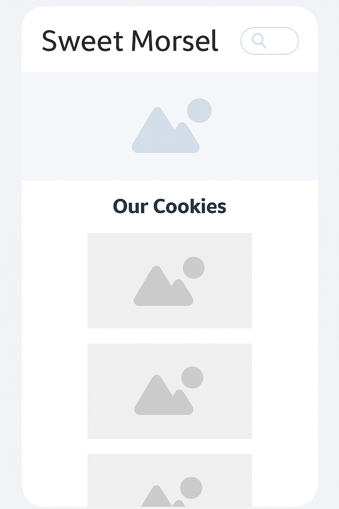
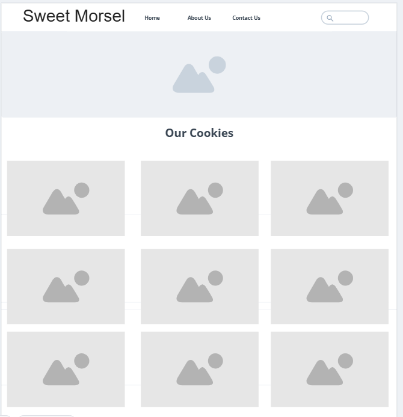

Site Name
Sweet Morsel is a charming name representing a local cookie company in Utah. We chose this name because it evokes the idea of delicious, bite-sized treats that bring joy to anyone who tries them.
Site Purpose
This site provides information about Sweet Morsel cookies, including the flavors available, company background, and a contact form for customer inquiries. It will serve as a simple online presence to connect with local cookie lovers and potential customers in Utah.
Scenarios
- What cookie flavors does Sweet Morsel offer and what do they look like?
- How can I send a message or place an inquiry with the Sweet Morsel team?
Color Schema
Brown
- Used for headers, buttons, and accents.Cream
- Used for the background and content areas.
Typography
- Fuzzy Bubbles: Used for headings and logo to convey a fun and friendly personality.
- Comic Sans MS: Used for body text to maintain a casual and accessible tone.
Wireframe
Mobile View:
Desktop View:
Note: Wireframes show logo, navigation menu, featured cookies section, and footer in both views.